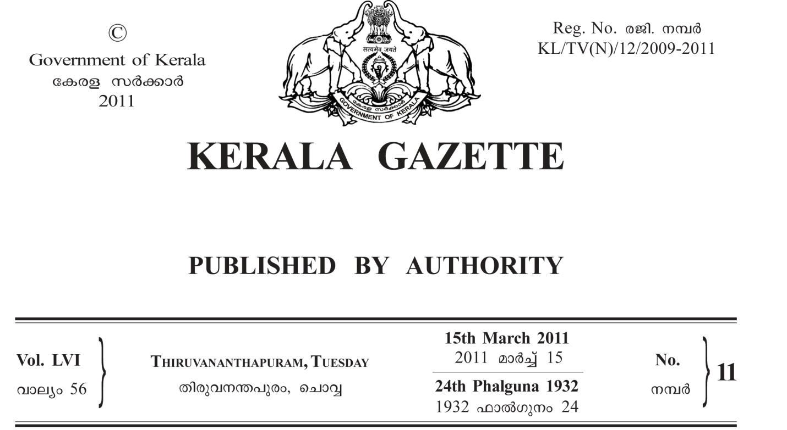

(1)
നമ്പർ ഡി.ബി. 808/2010-11/ഇ.ഇ. 2011 ഫെബ്രുവരി 28.
കേരള ഗവർണ്ണർക്കുവേ ി തുറമുഖ എഞ്ചിനീയറിംഗ് വകുപ്പ് എറണാകുളം ഡിവിഷൻ എക്സിക്യൂട്ടീവ് എഞ്ചിനീയർ തീരദേശ റോഡുകളുടെ അപ്ഗ്രഡേഷനിൽ ഉൾപ്പെട്ട എറണാകുളം ജില്ലയിലെ താഴെ പറയുന്ന പ്രവൃത്തികൾക്ക് അംഗീ കൃത കരാറുകാരിൽ നിന്നും മുദ്രവച്ച ദർഘാസുകൾ ക്ഷണിച്ചു കൊള്ളുന്നു.
ദർഘാസ് നമ്പരും ക്രമ പ്രവൃത്തിയുടെ പേരും നിരതദ്രവ്യം നമ്പർ അടങ്കൽ തുകയും `
1 64/2010-11/ഇ.ഇ.—ഏഴിക്കര പഞ്ചായത്തിലെ വെളുത്താട്ട്-കാളികുളങ്ങര ടെമ്പിൾ റോഡിന്റെ നിർമ്മാണം— ` 11.50 ലക്ഷം 28,750
2 65/2010-11/ഇ.ഇ.—കുമ്പളങ്ങി പഞ്ചായത്തിലെ പഴങ്ങാട് മാർക്കറ്റിൽ നിന്നും പടിഞ്ഞാറോട്ടുള്ള ഫുട്പാത്തിന്റേയും വടക്കോട്ടുള്ള ഓട യുടെയും നിർമ്മാണം— ` 11 ലക്ഷം 27,500 3 66/2010-11/ഇ.ഇ.—കുമ്പളം പഞ്ചായത്തിലെ വാർഡ് നമ്പർ 15-ലെ പണിക്കാശ്ശേരി
റോഡിന്റെ പുനരുദ്ധാരണം— ` 4.5 ലക്ഷം 11,250 ദർഘാസ് പ്രമാണത്തിന്റെ വില—ക്രമനമ്പർ 1-ന് ` 1,800 + വാറ്റ്, ക്രമനമ്പർ 2-ന് ` 1,700 +വാറ്റ്, ക്രമനമ്പർ 3-ന് ` 900 +വാറ്റ്.
ദർഘാസ് പ്രമാണം വിൽക്കുന്ന തീയതിയും സമയവും—
18-3-2011 മുതൽ 22-3-2011-ന് ഉച്ചയ്ക്ക് 12 മണിവരെ.
ദർഘാസ് പ്രമാണം സ്വീകരിക്കുന്ന തീയതിയും സമയവും—
22-3-2011-ന് ഉച്ചയ്ക്ക് 3 മണിവരെ.
ദർഘാസ് പ്രമാണം തുറക്കുന്ന തീയതിയും സമയവും—
22-3-2011-ന് ഉച്ചയ്ക്ക് 3.30-ന്.
കരാറുകാരുടെ
3-ന് 'ഡി'-യും അതിനു മുകളിലും, ക്രമനമ്പർ 1-നും 2-നും 'സി'-യും അതിനുമുകളിലും.
പ്രവൃത്തി പൂർത്തീകരിക്കേ കാലാവധി—3 മാസം.
സർക്കാർ ഉത്തരവ് 84/97 പി.ഡബ്ലിയൂ. ആന്റ് ടി തീയതി 10-8-1997 പ്രകാരമുള്ള നിബന്ധനകളും പൊതുമരാമത്ത് വകുപ്പിലേയും ഹാർബർ എഞ്ചിനീയറിംഗ് വകുപ്പിലേയും ദർഘാസ് സംബന്ധിച്ച എല്ലാ നിബന്ധനകളും ഈ ദർഘാ സിനും ബാധകമാണ്. കാരണം കൂടാതെ ദർഘാസ് റദ്ദ് ചെയ്യുന്നതിനോ മാറ്റി വയ്ക്കുന്നതിനോ ഉള്ള അധികാരം താഴെ ഒപ്പിട്ടിരിക്കുന്ന ഉദ്യോഗസ്ഥനിൽ നിക്ഷിപ്തമാണ്. ദർഘാസിനെക്കുറിച്ച് കൂടുതൽ വിവരങ്ങൾക്ക് ആഫീസുമായി ബന്ധ പ്പെടേ താണ്. (2)
നമ്പർ ഡി.ബി. 808/2010-11/ഇ.ഇ. 2011 ഫെബ്രുവരി 25.
കേരള ഗവർണ്ണർക്കുവേ ി തുറമുഖ എഞ്ചിനീയറിംഗ് വകുപ്പ് എറണാകുളം ഡിവിഷൻ എക്സിക്യൂട്ടീവ് എഞ്ചിനീയർ തീരദേശ റോഡുകളുടെ അപ്ഗ്രഡേഷനിൽ ഉൾപ്പെട്ട എറണാകുളം ജില്ലയിലെ താഴെ പറയുന്ന പ്രവൃത്തികൾക്ക് അംഗീ കൃത
കരാറുകാരിൽ നിന്നും മുദ്രവച്ച ദർഘാസുകൾ ക്ഷണിച്ചു കൊള്ളുന്നു.
ദർഘാസ് നമ്പരും
ക്രമ പ്രവൃത്തിയുടെ പേരും നിരതദ്രവ്യം നമ്പർ അടങ്കൽ തുകയും `
16,250
1 62/2010-11/ഇ.ഇ.—വടക്കേക്കര പഞ്ചായത്തിലെ 18-ാം വാർഡ് സ്കൂൾ റോഡിന്റെ നിർമ്മാണം— ` 6.50 ലക്ഷം
2 63/2010-11/ഇ.ഇ.—വരാപ്പുഴ പഞ്ചായത്തിലെ ശ്രദ്ധാലയം-മണ്ണംതുരുത്ത് റോഡിന്റെ നിർമ്മാണം— ` 10 ലക്ഷം 25,000
ദർഘാസ് പ്രമാണത്തിന്റെ വില—ക്രമനമ്പർ 1-ന് ` 1,300 + വാറ്റ്, ക്രമനമ്പർ 2-ന് ` 1,500 +വാറ്റ്.
ദർഘാസ് പ്രമാണം വിൽക്കുന്ന തീയതിയും സമയവും—
18-3-2011 മുതൽ 21-3-2011-ന് ഉച്ചയ്ക്ക് 12 മണിവരെ.
ദർഘാസ് പ്രമാണം സ്വീകരിക്കുന്ന തീയതിയും സമയവും—
21-3-2011-ന് ഉച്ചയ്ക്ക് 3 മണിവരെ.
ദർഘാസ് പ്രമാണം തുറക്കുന്ന തീയതിയും സമയവും—
21-3-2011, ഉച്ചയ്ക്ക് 3.30-ന്.
കരാറുകാരുടെ യോഗ്യത—'സി' ക്ലാസ്സും അതിനുമുകളിലും.
പ്രവൃത്തി പൂർത്തീകരിക്കേ കാലാവധി—ക്രമനമ്പർ 1-ന് 3 മാസം, ക്രമനമ്പർ 2-ന് 4 മാസം.
സർക്കാർ ഉത്തരവ് 84/97 പി.ഡബ്ലിയൂ. ആന്റ് ടി തീയതി 10-8-1997 പ്രകാരമുള്ള നിബന്ധനകളും പൊതുമരാമത്ത് വകുപ്പിലേയും ഹാർബർ എഞ്ചിനീയറിംഗ് വകുപ്പിലേയും ദർഘാസ് സംബന്ധിച്ച് എല്ലാ നിബന്ധനകളും ഈ ദർഘാ സിനും ബാധകമാണ്. കാരണം കൂടാതെ ദർഘാസ് റദ്ദ് ചെയ്യുന്നതിനോ മാറ്റി വയ്ക്കുന്നതിനോ ഉള്ള അധികാരം താഴെ ഒപ്പിട്ടിരിക്കുന്ന ഉദ്യോഗസ്ഥനിൽ നിക്ഷിപ്തമാണ്. ദർഘാസിനെക്കുറിച്ച് കൂടുതൽ വിവരങ്ങൾക്ക് ആഫീസുമായി ബന്ധ പ്പെടേ താണ്.
(3)
നമ്പർ ഡി.ബി. 808/2010-11./ഇ.ഇ. 2011 മാർച്ച് 1.
കേരള ഗവർണ്ണർക്കുവേ ി തുറമുഖ എഞ്ചിനീയറിംഗ് വകുപ്പ് എറണാകുളം ഡിവിഷൻ എക്സിക്യൂട്ടീവ് എഞ്ചിനീയർ തീരദേശ റോഡുകളുടെ അപ്ഗ്രഡേഷനിൽ ഉൾപ്പെട്ട എറണാകുളം ജില്ലയിലെ താഴെ പറയുന്ന പ്രവർത്തികൾക്ക് അംഗീ കൃത
കരാറുകാരിൽ നിന്നും മുദ്രവച്ച ദർഘാസുകൾ ക്ഷണിച്ചു കൊള്ളുന്നു.
ക്രമദർഘാസ് നമ്പരും നിരതദ്രവ്യം നമ്പർ പ്രവൃത്തിയുടെ പേരും ` അടങ്കൽ തുകയും
18,750
ശ്ശേരി റോഡ് നിർമ്മാണം—
5,500
1 67/2010-11/ഇ.ഇ.—പുത്തൻവേലിക്കര ഗ്രാമ പഞ്ചായത്തിലെ തേനാപ്പുറം കോളനി റോഡിന്റെ നിർമ്മാണം—` 14 ലക്ഷം 35,000 2 68/2010-11/ഇ.ഇ.—പറവൂർ മുനിസിപ്പാലിറ്റിയിലെ കൊച്ചേലിപ്പറമ്പ് കോൺക്രീറ്റ് റോഡിന്റെ നിർമ്മാണം— ` 9 ലക്ഷം 22,500 3 69/2010-11/ഇ.ഇ.—ഏഴിക്കര ഗ്രാമപഞ്ചായത്തിലെ വലിയപറമ്പിൽ റോഡ് നിർമ്മാണം— ` 7.5 ലക്ഷം 4 70/2010-11/ഇ.ഇ.—ഏഴിക്കര ഗ്രാമപഞ്ചായത്തിലെ കൊച്ചിക ` 2.2 ലക്ഷം 5 71/2010-11/ഇ.ഇ.—ഏഴിക്കര ഗ്രാമപഞ്ചായത്തിലെ കളത്തിപ്പറമ്പ് ആറാട്ടുകടവ് റോഡ് നിർമ്മാണം— ` 9.8 ലക്ഷം 24,500
ദർഘാസ് പ്രമാണത്തിന്റെ വില—ക്രമനമ്പർ 1-ന് ` 2,100+ വാറ്റ്, ക്രമനമ്പർ 4-ന് ` 500+വാറ്റ്, മറ്റുള്ളവയ്ക്ക് ` 1,500+വാറ്റ്.
ദർഘാസ് പ്രമാണം വിൽക്കുന്ന തീയതിയും സമയവും—
21-3-2011 മുതൽ 23-3-2011 ഉച്ചയ്ക്ക് 12 മണിവരെ.
ദർഘാസ്
പ്രമാണം സ്വീകരിക്കുന്ന തീയതിയും സമയവും—23-3-2011 ഉച്ചയ്ക്ക് 3 മണിവരെ.
ദർഘാസ് പ്രമാണം തുറക്കുന്ന തീയതിയും സമയവും—
23-3-2011 ഉച്ചയ്ക്ക് 3.30-ന്.
കരാറുകാരന്റെ ക്ലാസ്സ്—ക്രമനമ്പർ 1-ന് 'സി' യും അതിനുമുകളിലും, ക്രമനമ്പർ 4-ന് 'ഡി' ക്ലാസ്സ്, മറ്റുള്ളവയ്ക്ക് 'സി' ക്ലാസ്സ്.
പ്രവൃത്തി പൂർത്തീകരിക്കേ കാലാവധി—ക്രമനമ്പർ 1-ന് 4 മാസം, ക്രമനമ്പർ 4-ന് 2 മാസം, മറ്റുള്ളവയ്ക്ക് 3 മാസം.
സർക്കാർ ഉത്തരവ് 84/97/പി. ഡബ്ലിയു. ആന്റ് ടി തീയതി 10-8-1997 പ്രകാരമുള്ള നിബന്ധനകളും പൊതുമരാമത്ത് വകുപ്പിലേയും ഹാർബർ എഞ്ചിനീയറിംഗ് വകുപ്പിലേയും ദർഘാസ് സംബന്ധിച്ച എല്ലാ നിബന്ധനകളും ഈ ദർഘാസിനും ബാധകമാണ്. കാരണം കൂടാതെ ദർഘാസ് റദ്ദ് ചെയ്യുന്നതിനോ മാറ്റി വയ്ക്കുന്നതിനോ ഉള്ള അധികാരം താഴെ ഒപ്പിട്ടിരിക്കുന്ന ഉദ്യോഗസ്ഥനിൽ നിക്ഷിപ്തമാണ്. ദർഘാസിനെ ക്കുറിച്ച് കൂടുതൽ വിവരങ്ങൾക്ക് ആഫീസുമായി ബന്ധപ്പെടേ താണ്.
എക്സിക്യൂട്ടീവ് എഞ്ചിനീയറുടെ കാര്യാലയം, തുറമുഖ എഞ്ചിനീയറിംഗ് വകുപ്പ്, എറണാകുളം ഡിവിഷൻ, (ഒപ്പ്) മുനമ്പം, പള്ളിപ്പോർട്ട് പി. ഒ. എക്സിക്യൂട്ടീവ് എഞ്ചിനീയർ.
നമ്പർ ഡി6/1371/2010/എസ്. ഇ. 2011 ഫെബ്രുവരി 25.
കേരള ഗവർണ്ണർക്കുവേ ി ഹാർബർ എഞ്ചിനീയറിംഗ് വകുപ്പ്, ഉത്തരമേഖലാ സൂപ്ര ിംഗ് എഞ്ചിനീയർ, കോഴി ക്കോട് ചുവടെ ചേർത്തിരിക്കുന്ന പ്രവൃത്തികൾക്ക് സംസ്ഥാനപൊതുമരാമത്ത് വകുപ്പ്/ഇറിഗേഷൻ വകുപ്പ്/കേന്ദ്ര പൊതു മരാമത്ത് വകുപ്പ് എന്നിവയിൽ രജിസ്ട്രേഷനുള്ള കരാറുകാരിൽ/സ്ഥാപനങ്ങളിൽ നിന്നും മത്സരസ്വഭാവമുള്ള ദർഘാസു കൾപ്രവൃത്തിയുടെ പേര് ആലേഖനം ചെയ്ത വെവ്വേറെ മുദ്ര വച്ച കവറുകളിൽ രജിസ്റ്റേർഡ് തപാൽ അഥവാ സ്പീഡ് പോസ്റ്റ് മാർഗ്ഗം ക്ഷണിച്ചുകൊള്ളുന്നു. കൊറിയർ സർവ്വീസ് മുഖേന ലഭിക്കുന്ന ദർഘാസുകൾ സ്വീകരിക്കുന്നതല്ല.
ദർഘാസ് നമ്പരും ദർഘാസ് ക്രമ പ്രവൃത്തിയുടെ പേരും ഫോറത്തിന്റെ നമ്പർ ഏകദേശ അടങ്കൽ തുകയും വില `
(1) (2)
(3)
5,900 +വാറ്റ്
1 124/എച്ച്.ഇ.ഡി./എൻ.സി./2010-11— ആർ. കെ. വി. വൈ—വയനാട് ജില്ല— കാരാപ്പുഴയിൽ അക്വേറിയം കെട്ടിടം നിർമ്മാണം (പുനർ ദർഘാസ്)— ` 39 ലക്ഷം
3,200 +വാറ്റ്
2 125/എച്ച്. ഇ. ഡി./എൻ. സി./2010-11— വർക്കിംഗ് ഗ്രൂപ്പ്—വയനാട് ജില്ല—പൂക്കോട് തടാകം—റെസ്റ്റ് ഷെൽട്ടർ, ചുറ്റുമതിൽ, ടിക്കറ്റ് കൗ ർ എന്നിവയുടെ റിപ്പയറും പുനരുദ്ധാരണവും (പുനർ ദർഘാസ്)— ` 21.25 ലക്ഷം
3 126/എച്ച്. ഇ. ഡി./എൻ.സി./2010-11— ടൂറിസം — കണ്ണൂർ ജില്ല — ധർമ്മടം തുരുത്തിന്റെ വികസന പ്രവൃത്തികൾ (പുനർ ദർഘാസ്)—` 41 ലക്ഷം 5,700 +വാറ്റ്
4 127/എച്ച്. ഇ. ഡി./എൻ. സി./2010-11— കോഴിക്കോട് ജില്ല—ബേപ്പൂർ തുറമുഖം— നിലവിലുള്ള പോർട്ട് വാർഫിന്റെ ഫേസിയ വാളിന്റെ ഉയരം കൂട്ടുന്ന പ്രവൃത്തിയും പുതിയ വാർഫിന്റെ ബാക്ക് അപ്പ് ഏരിയ പുനർ നിർമ്മാണവും (പുനർ ദർഘാസ്)— ` 45 ലക്ഷം
5 128/എച്ച്. ഇ. ഡി./എൻ. സി./2010-11— കാസർഗോഡ് ജില്ല—തീരദേശ റോഡുക ളുടെ പുനരുദ്ധാരണം—പള്ളം റെയിൽവേ ഗേറ്റ് മുതൽ കസബ ബീച്ച് വരെയുള്ള റോഡിന്റെ പുനരുദ്ധാരണം—` 22 ലക്ഷം 3,300 +വാറ്റ്
3,700 +വാറ്റ്
6 129/എച്ച്. ഇ. ഡി./എൻ. സി./2010-11— കോഴിക്കോട് ജില്ല—കൊയിലാ ി മത്സ്യ ബന്ധന തുറമുഖ പദ്ധതി—ടോയ്ലറ്റ് ബ്ലോക്കിന്റെ നിർമ്മാണം (പുനർ ദർഘാസ്)— ` 24.03 ലക്ഷം
6,200 +വാറ്റ്
7 130/എച്ച്. ഇ. ഡി./എൻ.സി./2010-11— കോഴിക്കോട് ജില്ല—കൊയിലാ ി മത്സ്യ ബന്ധന തുറമുഖ പദ്ധതി—ചുറ്റുമതിലിന്റെ നിർമ്മാണം (പുനർ ദർഘാസ്)— ` 40.92 ലക്ഷം
8 131/എച്ച്. ഇ. ഡി./എൻ. സി./2010-11— കോഴിക്കോട് ജില്ല—കൊയിലാ ി മത്സ്യ ബന്ധന തുറമുഖ പദ്ധതി—കിണർ, ജല സംഭരണി എന്നിവയുടെ നിർമ്മാണവും ജലവിതരണ സംവിധാനം ഏർപ്പെടുത്തലും (പുനർ ദർഘാസ്)—` 28.38 ലക്ഷം 4,300 +വാറ്റ്
9132/എച്ച്. ഇ. ഡി./എൻ. സി./2010-11— കോഴിക്കോട് ജില്ല—കൊയിലാ ി മത്സ്യ ബന്ധന തുറമുഖ പദ്ധതി—കാന്റീൻ ബിൽഡിംഗിന്റെ നിർമ്മാണം (പുനർ ദർഘാസ്)—` 36.50 ലക്ഷം 5,500 +വാറ്റ്
10 133/എച്ച്. ഇ. ഡി./എൻ. സി./2010-11— കണ്ണൂർ ജില്ല—പട്ടുവം ഗ്രാമപഞ്ചായത്ത്— തീരദേശ റോഡുകളുടെ പുനരുദ്ധാരണം— മാനൂക്കര—മുത്തുക്കുട അംഗൻവാടി റോഡ് പുനരുദ്ധാരണം—` 18.50 ലക്ഷം 2,800 +വാറ്റ്
4,300 +വാറ്റ്
11 134/എച്ച്. ഇ. ഡി./എൻ. സി./2010-11— കണ്ണൂർ ജില്ല—രാമന്തളി ഗ്രാമപഞ്ചായത്ത്— തീരദേശ റോഡുകളുടെ പുനരുദ്ധാരണം— മൗലവി ലിങ്ക് റോഡ് പുനരുദ്ധാരണം— ` 28.40 ലക്ഷം
2,700 +വാറ്റ്
12 135/എച്ച്. ഇ. ഡി./എൻ. സി./2010-11— കണ്ണൂർ ജില്ല—മാടായി ഗ്രാമപഞ്ചായത്ത്— തീരദേശ റോഡുകളുടെ പുനരുദ്ധാരണം— പി.ഡബ്ല്യൂ.ഡി.ലിങ്ക് റോഡ് പുനരുദ്ധാരണം— ` 17.50 ലക്ഷം
13 136/എച്ച്. ഇ. ഡി./എൻ. സി./2010-11— കണ്ണൂർജില്ല—മാട്ടൂൽ ഗ്രാമപഞ്ചായത്ത്— തീരദേശ റോഡുകളുടെ പുനരുദ്ധാരണം— മടക്കര ആയിരം തെങ്ങ് കടവ് റോഡ് നവീകരണം—` 36 ലക്ഷം 5,400 +വാറ്റ്
14 137/എച്ച്. ഇ. ഡി./എൻ. സി./2010-11— മലപ്പുറം ജില്ല—ടൂറിസം—പുഴയുടെ 9,000 +വാറ്റ്
തീരത്ത് വാക്ക് വേ നിർമ്മാണം— ` 47.70 ലക്ഷം
3,000 +വാറ്റ്
15 138/എച്ച്. ഇ. ഡി./എൻ. സി./2010-11— കോഴിക്കോട് ജില്ല—കൊയിലാ ി മുനിസിപ്പാലിറ്റി—തീരദേശ റോഡുകളുടെ പുനരുദ്ധാരണം-മന്ദമംഗലം ബീച്ച് റോഡിന്റെ നിലവാരം ഉയർത്തൽ— ` 19.75 ലക്ഷം
3,600 +വാറ്റ്
16 139/എച്ച്. ഇ. ഡി./എൻ. സി./2010-11— കോഴിക്കോട് ജില്ല — കോഴിക്കോട് കോർപ്പറേഷൻ—തീരദേശ റോഡുകളുടെ പുനരുദ്ധാരണം—മാത്തോട്ടം-ഒ. എം. റോഡിന്റെ നിലവാരം ഉയർത്തൽ— ` 24 ലക്ഷം
17 140/എച്ച്. ഇ. ഡി./എൻ. സി./2010-11— ഹൈഡ്രോഗ്രാഫിക് സർവേ വിംഗ്— ബേപ്പൂർ മറൈൻ സർവ്വേയർ ഓഫീസിന് പുതിയ കെട്ടിടം നിർമ്മിക്കൽ—` 60 ലക്ഷം 9,000 +വാറ്റ് നിരതദ്രവ്യം ക്രമനമ്പർ 10-ന് ഭ 46,300, മറ്റുള്ളവയ്ക്ക് ഭ 50,000 വീതം.
കരാറുകാരുടെ ക്ലാസ് ക്രമനമ്പർ 17-ന് എ ക്ലാസ്, മറ്റുള്ളവയ്ക്ക് ബി ക്ലാസ്സും അതിലുപരിയും.
പ്രവൃത്തി തീർക്കേ കാലാവധി—ക്രമനമ്പർ 1, 2, 4, 6 ഇവയ്ക്ക് 5 മാസം, ക്രമനമ്പർ 3, 9, 14, 17 ഇവയ്ക്ക് 6 മാസം, ക്രമനമ്പർ 5, 7, 10, 11, 12, 13, 15, 16 ഇവയ്ക്ക് 3 മാസം, ക്രമനമ്പർ 8-ന് 4 മാസം.
ദർഘാസ് ഫോറങ്ങൾ ഹാർബർ എഞ്ചിനീയറിംഗ് വകുപ്പ്, ഉത്തരമേഖല സൂപ്ര ിംഗ് എഞ്ചിനീയറുടെ ഓഫീ സിൽനിന്നും 16-3-2011 മുതൽ 18-3-2011 വൈകുന്നേരം 3 മണിവരെ ആയതിന്റെ വിലയും വിൽപ്പന നികുതിയും (മടക്കി കൊടുക്കുന്നതല്ല) അടച്ച് രേഖാമൂലം അപേക്ഷിച്ചാൽ ലഭിക്കുന്നതാണ്. ദർഘാസ് പ്രമാണങ്ങൾ കൈമാറ്റം ചെയ്യാൻ പാടു ള്ളതല്ല.
തുമാണ്. ദർഘാസ് പ്രവൃത്തിക്കുള്ള ദർഘാസ് കവറിലാക്കി പ്രവൃത്തിയുടെ പേരും ദർഘാസ് നമ്പരും കവറിന്റെ മുകളിൽ രേഖപ്പെടുത്തി ഹാർബർ എഞ്ചിനീയറിംഗ് വകുപ്പ്, ഉത്തരമേഖല സൂപ്ര ിംഗ് എഞ്ചിനീയറുടെ പേരിൽ 25-3-2011-ന് വൈകുന്നേരം 3.30 താണ്. 25-3-2011 വൈകുന്നേരം 3.30 മണിക്ക് മുമ്പായി രജിസ്റ്റേർഡ് തപാൽ അഥവാ സ്പീഡ് പോസ്റ്റ് മാർഗ്ഗം ലഭിക്കേ മണിക്ക് ശേഷം ലഭിക്കുന്ന ദർഘാസുകൾ ആയത് തപാൽ തകരാറുമൂലമോ മറ്റേതെങ്കിലും കാരണവശാലോ ആയാലും സ്വീകരിക്കുന്നതല്ല. ദർഘാസ് സ്വീകരിക്കുന്ന അവസാന ദിവസം ഏതെങ്കിലും കാരണവശാൽ സർക്കാർ അവധിയായി പ്രഖ്യാപിക്കുകയാണെങ്കിൽ തൊട്ടടുത്ത പ്രവൃത്തിദിവസം വൈകുന്നേരം 3.30 മണിവരെ ദർഘാസുകൾ സ്വീകരിക്കുന്നതാ ണ്. ദർഘാസ് പ്രമാണങ്ങളോടൊപ്പം ` 100 വിലയുള്ള മുദ്രപ്പത്രത്തിൽ നിർദ്ദിഷ്ട പ്രാഥമിക ഉടമ്പടി ഒപ്പിട്ട് സമർപ്പിക്കേ തും അതോടൊപ്പംതന്നെ സൂപ്ര ിംഗ് എഞ്ചിനീയർ, ഹാർബർ എഞ്ചിനീയറിംഗ് വകുപ്പ്, ഉത്തരമേഖല, കോഴിക്കോട്-6 എന്ന പേരിൽ ആവശ്യമായ നിരതദ്രവ്യം നിയമപ്രകാരം കെട്ടിവച്ചതിന്റെ രേഖ അടക്കം ചെയ്യേ പ്രമാണങ്ങൾ പൂർണ്ണമായും പൂരിപ്പിക്കേ താണ്. അപ്രകാരം ചെയ്യാത്തവ നിരസിക്കുന്നതാണ്. ദർഘാസുകൾ സ്വീകരി ക്കുന്ന അവസാന ദിവസം വൈകുന്നേരം 4 മണിക്ക് സൂപ്ര ിംഗ് എഞ്ചിനീയറോ അദ്ദേഹം അധികാരപ്പെടുത്തുന്ന മറ്റു ദ്യോഗസ്ഥനോ ഹാജരുള്ള കരാറുകാരുടെയോ അവരുടെ പ്രതിനിധികളുടെയോ സാന്നിദ്ധ്യത്തിൽ തുറന്ന് പരിശോധിക്കു ന്നതാണ്. ദർഘാസുകളുടെ ഫേം പീരിയഡ് ദർഘാസുകൾ തുറക്കുന്നതുമുതൽ 4 മാസം ആയിരിക്കും. കേരള പൊതുമരാ മത്ത് വകുപ്പിലെ ദർഘാസ് സംബന്ധമായ എല്ലാ നിബന്ധനകളും ദർഘാസ് പരിഗണനയ്ക്കുള്ള മറ്റ് അനുബന്ധ ഉത്തരവുകളും ഈ ദർഘാസിനും ബാധകമായിരിക്കും. 29-6-2004-ലെ സർക്കാർ ഉത്തരവ് നമ്പർ (ആർടി.) 255/2004/എഫ് & പിഡി ഈ ദർഘാസിനും ബാധകമായിരിക്കും. ദർഘാസ് ഫോറങ്ങൾക്കുള്ള അപേക്ഷയോ പൂരിപ്പിച്ച് സമർപ്പിക്കുന്ന ദർഘാസ് പ്രമാ ണങ്ങളോ യാതൊരു കാരണവും കാണിക്കാതെതന്നെ നിരസിക്കുന്നതിനുള്ള അധികാരം താഴെ ഒപ്പിട്ടിരിക്കുന്ന ആളിൽ നിക്ഷിപ്തമാണ്. ദർഘാസുകൾ പരിഗണിക്കുമ്പോൾ രാജ്യത്തിന്റെ സുരക്ഷയും പ്രതിരോധവും കണക്കിലെടുക്കുന്ന താകുന്നു.
സൂപ്ര ിംഗ് എഞ്ചിനീയറുടെ കാര്യാലയം, ഹാർബർ എഞ്ചിനീയറിംഗ് (ഒപ്പ്) ഉത്തരമേഖല ചക്കോരത്ത്കുളം, സൂപ്ര ിംഗ് എരഞ്ഞിപ്പാലം പോസ്റ്റ്, കോഴിക്കോട്. എഞ്ചിനീയർ.
നമ്പർ ഡി3-2829/2010. 2011 ഫെബ്രുവരി 26. കേരള ഗവർണ്ണർക്കുവേ ി എക്സിക്യൂട്ടീവ് എഞ്ചിനീയർ, ഹാർബർ എഞ്ചിനീയറിംഗ് ഡിവിഷൻ്, കണ്ണൂർ താഴെ പറ യുന്ന പ്രവൃത്തികൾക്ക് അംഗീകൃത കരാറുകാരിൽനിന്നും മുദ്രവച്ച ദർഘാസുകൾ ക്ഷണിച്ചുകൊള്ളുന്നു.
ദർഘാസ് നമ്പരും ക്രമ പ്രവൃത്തിയുടെ പേരും നിരതദ്രവ്യം നമ്പർ അടങ്കൽ തുകയും ` (3) (1) (2)
1 എച്ച്. ഇ. ഡി./ഇഇ/28/2010-11—തീരദേശ റോഡുകളുടെ പുനരുദ്ധാരണം—കണ്ണൂർ ജില്ല ധർമ്മടം-മീത്തലെ പീടിക പരീക്കടവ് റോഡിന്റെ നവീകരണം—` 15 ലക്ഷം 37,500
2 എച്ച്.ഇ.ഡി./ഇഇ/29/2010-11—ICAD പ്രോജക്ട്- കാസർഗോഡ് ജില്ല—അജാനൂർ കട പ്പുറത്ത് പുതുതായി നിർമ്മിച്ച എഫ്.എൽ.സി. യുടെ ഇലക്ട്രിഫിക്കേഷൻ പ്രവൃത്തി—`1,85,000 4,700
3 എച്ച്.ഇ.ഡി./ഇഇ/30/2010-11—ICAD പ്രോജക്ട്- കാസർഗോഡ് ജില്ല—പുഞ്ചാവി കടപ്പുറത്ത് പുതുതായി നിർമ്മിച്ച എഫ്.എൽ. സി. യുടെ ഇലക്ട്രിഫിക്കേഷൻ പ്രവൃത്തി—`1,55,000 3,900
4 എച്ച്.ഇ.ഡി./ഇഇ/28/2010-11 —ടി കോയിപ്പാടി കടപ്പുറത്ത് പുതുതായി നിർമ്മിച്ച എഫ്.എൽ.സി. യുടെ ഇലക്ട്രിഫിക്കേഷൻ പ്രവൃത്തി—` 1,55,000 3,900 ദർഘാസ് ഫോറത്തിന്റെ വില—ക്രമനമ്പർ 1-ന് ` 2,300 + വാറ്റ്, ക്രമനമ്പർ 2-നും 4-നും ` 400 +വാറ്റ്, ക്രമനമ്പർ 3-ന് ` 4,700 +വാറ്റ്.
ദർഘാസുകൾ വിൽക്കുന്ന തീയതി—16-3-2011 മുതൽ 21-3-2011 വരെ.
ദർഘാസ് പ്രമാണങ്ങൾ ലഭിക്കേ അവസാന തീയതിയും സമയവും—21-3-2011 വൈകുന്നേരം 3.30 മണിവരെ. ദർഘാസ് തുറക്കുന്ന തീയതിയും സമയവും—
21-3-2011 വൈകുന്നേരം 4 മണി.
കരാറുകാരന്റെ ക്ലാസ്സ്—ക്രമനമ്പർ 1-ന് 'സി'യും ഉപരിയും, മറ്റുള്ളവയ്ക്ക് 'സി'യും ഉപരിയും (ഇലക്ട്രിക്കൽ). പ്രവൃത്തിയുടെ കാലാവധി—ക്രമനമ്പർ 1-ന് 3 മാസം, മറ്റുള്ളവയ്ക്ക് 1 മാസം.
ദർഘാസ് പ്രമാണങ്ങളോടൊപ്പം ` 100 വിലയുള്ള മുദ്ര താണ്. ദർഘാസുകളുടെ ഫേം പീരിയഡ് ദർഘാസുകൾ തുറക്കുന്നത് പത്രത്തിൽ പ്രാഥമിക ഉടമ്പടി സമർപ്പിക്കേ മുതൽ 4 മാസം വരെ ആയിരിക്കും.
ദർഘാസ് സംബന്ധിച്ചുള്ള കേരള പൊതുമരാമത്ത് വകുപ്പിന്റേയും തുറമുഖ എഞ്ചിനീയറിംഗ് വകുപ്പിന്റേയും എല്ലാ വ്യവസ്ഥകളും ഇതിനും ബാധകമാണ്. കാരണം കൂടാതെ ദർഘാസ് റദ്ദ് ചെയ്യാനോ മാറ്റിവയ്ക്കാനോ ഉള്ള അധികാരം താഴെ ഒപ്പിട്ടിരിക്കുന്ന ഉദ്യോഗസ്ഥനിൽ നിക്ഷിപ്തമാണ്. മേൽ പ്രസ്താവിച്ചിരിക്കുന്ന പ്രവൃത്തിയെ പറ്റിയുള്ള കൂടുതൽ വിവരങ്ങൾക്ക് ഓഫീസുമായി ബന്ധപ്പെടാവുന്നതാണ്. 29-6-2004-ലെ സർക്കാർ ഉത്തരവ് നമ്പർ (ആർടി) 255/2004/എഫ് & പി. ഡി ഈ ദർഘാസിന് ബാധകമായിരിക്കും.
ദർഘാസ് ഫോറങ്ങൾക്കുള്ള അപേക്ഷയോ പൂരിപ്പിച്ച് സമർപ്പിക്കുന്ന ദർഘാസ് പ്രമാണങ്ങളോ യാതൊരു കാര ണവും കാണിക്കാതെതന്നെ നിരസിക്കുന്നതിനുളള അധികാരം താഴെ ഒപ്പിട്ടിരിക്കുന്ന ആളിൽ നിക്ഷിപ്തമാണ്. ദർഘാസു കൾ പരിഗണിക്കുമ്പോൾ രാജ്യത്തിന്റെ സുരക്ഷയും പ്രതിരോധവും കണക്കിലെടുക്കുന്നതാണ്. എക്സിക്യൂട്ടീവ് എഞ്ചിനീയറുടെ കാര്യാലയം, (ഒപ്പ്)
ഹാർബർ എഞ്ചിനീയറിംഗ് ഡിവിഷൻ, എക്സിക്യൂട്ടീവ് എഞ്ചിനീയർ.
കണ്ണൂർ.